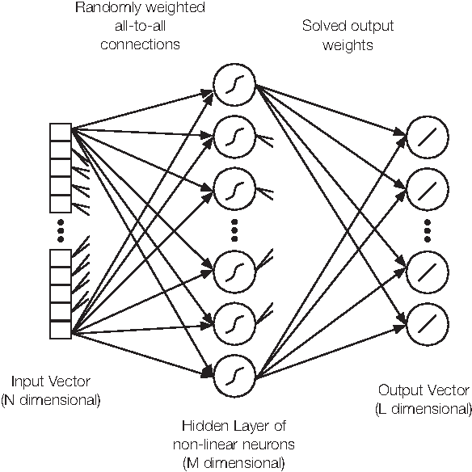
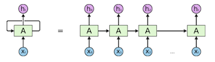
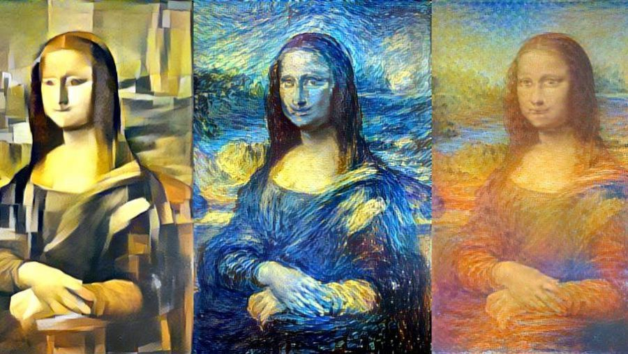
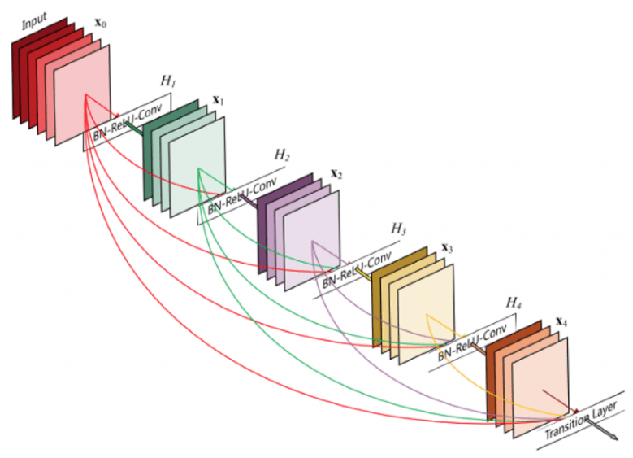

Neural Networks (General)
A Simple Example
Consider the problem of classifying points on a Cartesian plane with a 1-layer neural network. Here, the inputs are fed into one fully connected hidden layer. An intermediate layer of the neural network serves to create a new representation of the data until eventually the final layer will draw a hyperplane to linearly seperate the data.
Let us assign the intermediate layer a tanh activation function. This means that the input is first subjected to a linear transformation from being multiplied by a weight matrix W followed by a linear translation from adding a bias vector b. The tanh activation function is then applied element-wise to each value of the transformed input.
The purpose of the tanh function is to map the input values to a range of -1 to 1 and is defined as tanh(x) = (exp(x) - exp(-x)) / (exp(x) + exp(-x)). The exponential function introduces nonlinearity to the linear transformation, allowing the network to learn positive and negative patterns. Let's break down what this activation function is doing. The exponential function returns only positive values, so for positive inputs exp(x) will be a larger value than exp(-x), resulting in a positive difference and for negative inputs exp(-x) will be larger resulting in a negative difference. Thus, the numerator captures the sign and magnitude of the input. The denominator sums these exponentials which serves as a normalization factor that accounts for the magnitude of the input value. In the case where the input tends towards positive or negative infinity, exp(x) or exp(-x) dominate respectively while the other term tends to 0 and the denominator is approximately equal to the numerator, causing the output of the tanh function to approach the boundaries of the function's range, which is -1 to 1.
This layer's operation can be summarized: tanh(Wx+b)

More Complicated Neural Networks
As the number of layers increases in a neural network, the network has the ability to learn and create new data representations at each layer. This process continues until the data becomes separable into distinct classes. This can be visualized by considering the activation levels of neurons in each layer as axes in a plot, where the data becomes increasingly separated by class at each layer. If the data is not linearly separable by the final layer, the network will not be an accurate classifier. An interesting visualization of this can be found here using ConvNetJS.
Each layer transforms space, but the space is topologically intact (i.e. space is not cut, broken, or folded). This means the fundamental structure and connectivity of the data are preserved which is important because if a set of data points were connected (all points reachable from one another) before going through a layer, it will remain connected after the layer's transformation, and vice versa.
The term "homeomorphisms" is used to describe these transformations that preserve topological properties. A homeomorphism is a mathematical concept that refers to a bijective function (a function that has a unique mapping from one set to another) that is continuous both ways. For example, multiplying by W (which can be reversed with its inverse, assuming W is non-singular) and adding by b are both homeomorphisms. Activation functions tanh, sigmoid (sigmoid(x) = 1 / (1 + e^(-x)), range 0 to 1), and softplus (softplus(x) = ln(1 + e^x), range 0 to pos. inf) are continuous functions with inverses point-wise. ReLU (ReLU(x) = max(0, x), range 0 to pos. inf) on the other hand does not have an inverse since it maps negative input values to 0 and keeps positive input values unchanged.
Word Embeddings
An example of a trained network involves generating sentences from scratch. A word embedding is a high dimensional vector assigned to each word and they are stored in a look-up table T. During the sentence generation process, each word is passed through the lookup table T to obtain its corresponding vector representation which is then passed to a module M to predict the validity of the sentence. To avoid the problem of only allowing a fixed number of inputs, a module A can take two words or phrases and merge them. This latter process is called a recursive neural network since the output of one module is the input for another similar module.
Backpropagation
Backpropagation is an optimized method to reduce the loss function over time. It calculates the gradient of the loss function with respect to the neural network's weights and heads backwards through the network to find the partial derivative of the errors with respect to the weights. It then uses these weights to reduce error by using gradient descent. The gradient descent algorithm adjusts the weights and biases by taking small steps in the opposite direction of the gradients, thus gradually reducing the loss
Recurrent Neural Networks
The feedforward neural network described above has no memory of the input it recieves. In contrast, a RNN has short-term memory since it applies weights to the current and also the previous input.

A timestep in the RNN can be summarized as follows:
Ai = tanh(WAi-1Ai-1 + Wxixi + bAi) and hi = tanh(WAiAi + bhi).
Different types of RNNs exist, such as One-to-One (one A module and one x input produce one h output), One-to-many (one A module and one x input produce an h output, which is used as input for the next A module), Many-to-one (one A and one x input produce a module output, used with another x as input to eventually produce a final h output), and Many-to-many (one A and one x are used as input to produce a module and an output h, while the output module and a new x are used as the next input).

The loss function is defined based on the loss at every time step (here L2 loss is used as an example):
\[ Loss = \sum_{t=1}^{{T}_{i}} (y_{t} - \hat{y}_{t})^2 \]
RNNs often encounter two intriguing phenomena: the vanishing and exploding gradient. These phenomena arise from the inherent difficulty in capturing long-term dependencies within the network. The cause of these issues lies in the multiplicative gradients (during backpropagation gradients pass through the recurrent connections, they are multiplied with each othe), which can undergo exponential decay or growth as the number of layers increases, posing significant challenges in effectively capturing and retaining information over extended sequences. In practice, this is accounted for by thresholding the gradient, known as gradient clipping. This works because it prevents unstable updates and prevents layers with large gradients from dominating the learning process.
LSTMs (Long Short Term Memory networks) are a type of RNN that support learning long-term dependencies. In an LSTM, there is a cell state for every module, which is a horizontal line that runs across the entire architecture. Each module contains gates that open variable amounts to modify this value before it is passed onto the next module. The first step in an LSTM is the sigmoid layer which looks at hi-1 and xi and outputs a 1 to keep a value in the cell state and a 0 to discard it (e.g. given a sentence, decide whether to discard the subject). Next, a sigmoid layer determines which values to update and a tanh layer generates new cell state values that can be added to the state (e.g. add the gender of another word in the sentence).
This process can be summarized (S represents the cell state, f is first sigmoid output, i and \(\hat{S}\) are the second sigmoid and tanh outputs respectively): Si = ft*St-1 + it*S_hat.
Neural Turing Machines are RNNs with an external memory component inspired by Turing machines. NTMs consist of a controller, a memory, and read/write heads. The controller, typically an RNN, processes input data and interacts with the memory by reading from and writing to it using the heads. The memory acts as a flexible storage system, allowing for read and write operations through content-based or location-based addressing. During operation, the the controller gives a query vector and each memory entry is scored for similarity with the query. These scores are converted into a distribution using softmax. After interpolating attention from the previous timestep, the attention is convolved with a shift filter (allows the controller to move its focus). Then, the attention distribution is sharpened which is fed to the read or write operation.
Convolutional Neural Networks
A convolutional neural network is designed for visual data and is inspired by the visual cortex in animals, where neurons in the brain respond to specific receptive fields in the visual field. CNNs have a convolutional, pooling, and fully connected layer. During the scanning process of the input, the convolution layer utilizes filters to carry out convolution operations, taking into account the input's dimensions. The hyperparameters of this layer consist of the filter size and the stride. The outcome of this process, referred to as the feature map or activation map. The filter volume is FxFxC, where F is the filter size and C is the number of input channels, which performs convolutions on an input of size NxNxC (where N is the input size) and outputs a feature map of size OxOxK (where O is the output size and K is the number of filters, commonly 2*C). The stride is the number of pixels the filter moves per operation (commonly equal to F). Padding is considered when deciding if the filter should see the input end-to-end, otherwise the last convolution is dropped if the dimensions don't match. Given these hyperparameters, the output size is defined as \[O = \frac{{N - F + P_{\text{begin}} + P_{\text{end}}}}{S} + 1\] where N is the input size, F is the filter size, and P is the amount of padding (total size of white space padding before/after image).
The pooling layer applies a downsampling operation. There are two common types: max pooling which selects the maximum value of the current view and average pooling which averages the values of the current view. The receptive field at a layer k is found by squaring \(R_k\), which is calculated:\[R_k = 1 + \sum_{j=1}^{k} (F_j - 1) \prod_{i=0}^{j-1} S_i\] The fully connected layer flattens the input and feeds each cell into all neurons, which optimizes class score.
You Only Look Once (YOLO) is a real-time object detection model which divides the image into NxN grid, then for each grid cell runs a CNN that calculates k times: \[y = \left[ p_c, b_x, b_y, b_h, b_w, c_1, c_2, \ldots, c_p, \ldots \right]^T \in \mathbb{R}^{G \times G \times k \times (5+p)}\] where \(p_c\) is the probability of detecting an object, each b is the bounding box, and each c is an indicator used to represent the detection of p classes, and k is the number of detected bounding boxes. To eliminate overlapping bounding boxes, a non-max suppression algorithm is used, which takes as input a set of bounding boxes and their confidences, sorts the boxes by descending confidence, selects the highest confidence box and measures overlap via Intersection over Union (IoU), and eliminates boxes over the IoU threshold.
In contrast, Region with Convolutional Neural Networks (R-CNN) is a bottom-up approach which first generates a set of potential bounding box proposals by employing a region proposal algorithm, such as Selective Search. The algorithm does not have any prior knowledge about the objects present in the image; instead, it generates a set of region proposals that cover various regions of interest in the image. Each proposal is independently forwarded through a CNN to extract features from the proposed region.
Various Visual Architectures
Neural Style Transfer is a technique which combines the content of one image with the style of another image to create a new synthesized image. A pre-trained CNN (a large dataset for object recognition tasks and has learned to extract meaningful features from images) is used to extract the content and style features from the original and style images. A loss function is defined to measure the difference between the content features of the synthesized image and the content image, as well as the difference between the style features of the synthesized image and the style image. The content cost is written: \[\text{Content Loss}= \frac{1}{2} \lVert a_{[i]}(C) - a_{[i]}(G) \rVert^2\] where \(a_i\) denotes the activation of layer i and C and G are the content and generated images respectively. The style matrix which describes how correlated channels c and c' are is written (image dimensions = hxwxl): \[G_{cc'}[l] = \sum_{i=1}^{h[l]} \sum_{j=1}^{w[l]} a_{ijc}[l] a_{ijc'}[l]\] Correspondingly, the style cost which compares the generated image G and the style image S is written: \[\text{Style Loss} = \frac{1}{(2hwl)^2} \sum_{c,c'=1}^{l} (G_{cc'}^{[i](S)} - G_{cc'}^{[i](G)})^2\] The overall cost can be written: \[Loss = \alpha * \text{Content Loss} + \beta * \text{Style Loss}\] where a higher alpha can prioritize the content and a higher beta will prioritize the style in the generated image.

Generative adversarial networks (GANs) take in random noise input and produce synthetic data samples that resemble the real data from a given training set (aim of the generator). The discriminator trained on real and fake data acts as a binary classifier that aims to differentiate between the real and synthetic data. In training, they are pitted against each other which provides adversarial training and implicit supervision (does not require labeled data but explores solution space) which improves performance of both the generator and discriminator.
Residual Nets (ResNets) addresses the problem of vanishing gradients by introducing residual connections which allow the network to learn residual mappings (the difference between the desired output and the current output at a given layer) in contrast to propagating raw feature maps which improves performance of deeper networks. Each residual block consists of two or more convolutional layers, followed by batch normalization and rectified linear unit (ReLU) activations. Instead of directly passing the output of one layer to the next, a shortcut connection is introduced that bypasses one or more layers. This shortcut connection allows the network to learn the residual mapping by adding the shortcut connection's output to the output of the convolutional layers.

|